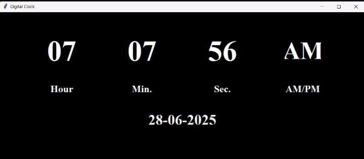

Digital Clock Using Python
A simple and elegant digital clock desktop app developed using Python and Tkinter. It displays the current system time in a real-time GUI window with dynamic updates every second. Great for practicing GUI development and `time` module usage.
- Live digital clock display
- Uses Tkinter for GUI interface
- Updates time every second
Tech Stack: Python, Tkinter